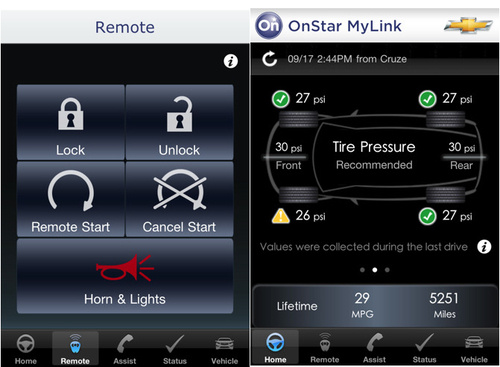
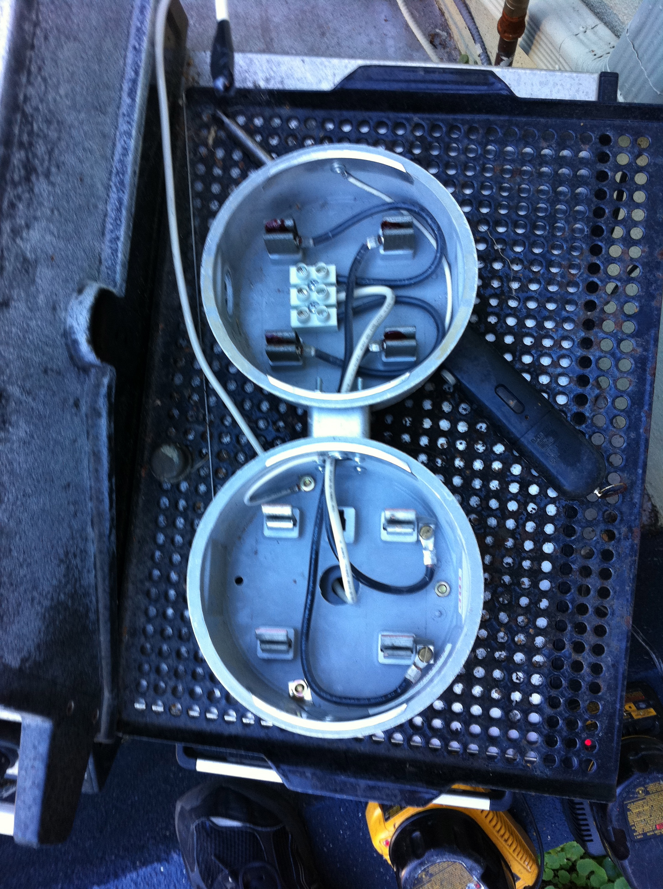
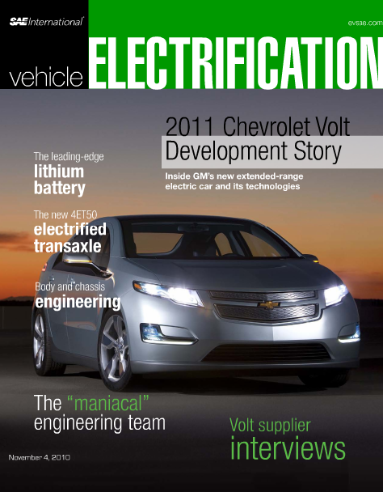
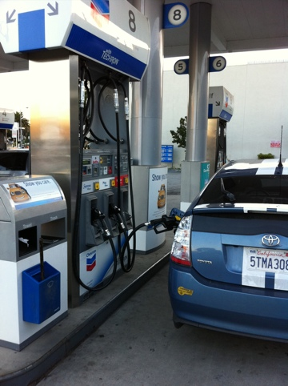
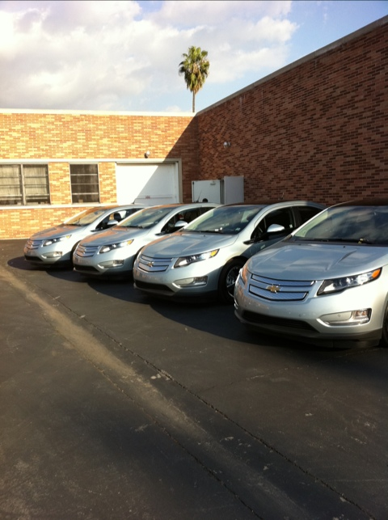
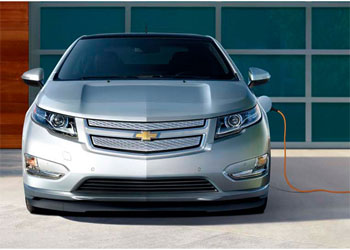
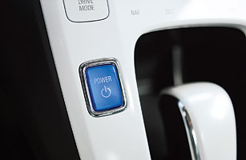

Follow-up for The Real GM-Volt Deal
November 01, 2010
After reporting on Lyle Dennis and his much-longer running GM Volt daily blog, Lyle wrote to me. He said, “If you would like to link back to your blog from GM-Volt, you need to delete the slanderous post there.”
I am pretty sure he meant libelous, since it is published rather than spoken. In the interest of reconciliation, and the hope that we could make a better community for Volt owners, Volt drivers, the CAB members, and people insterested in the Volt, I took down the post and wrote to Lyle. I said, primarily:
GM-Volt's daily blog is your site. I strongly believe in the voice of an author and that someone with your degree of passion should protect their expression as much as possible. I also believe the forums are a community, and as such should operated with a little care toward protecting *those* participants. To that end, I would suggest the following: - Links are okay. You yourself linked to BNet.com, which has ads. I think you could have a moderator patrol the links a little and if someone is clearly spamming, you hide a post, send them a note, and the next time you ban them. That goes for links in signature blocks, Twitter names and so on. If Mark wants to have a link to the CAB site in his signature, that's okay. If Chelsea has a link to her blog and to greencars.com, those are things that your community members might want to check out.
- You cannot edit posts. Doing so undermines the expression of the community members. If you do it to someone twice they are unlikely to post again with any meaningful thoughts because of the chilling effect of perceived censorship. I would suggest if you have a problem with a post that you send the person a note and try to get them to edit it. Even better, since you are the host of the party, if someone writes something you need to respond to, respond in public. The answer to bad information should always be the swift publication of good information. Deleting the bad information just makes it seem that it is good information someone is suppressing. That only build credibility for the author. Calling them out in public is a much better plan.
- The same goes for deleting posts. I understand the sensitivity of keeping out trolls (see below), but wantonly deleting a post or thread has a terrible effect on the community. Essentially, only the people who have thick skin continue to post, and those are not always the best members of your community.
I would like to see these community guidelines posted somewhere with a note from you saying this is what you are following. But that's not necessary. If you just write me and say those are agreeable to you and you (and your moderator(s?)) will be following them from now on, that would be enough. I could then participate without fear that my contributions were a waste of time, and I could happily pass people the link to GM-Volt when asked about the car.
Read more…
My Worlds Colliding
November 02, 2010

Those are some of the sample screens from OnStar's new iPhone application. I have seen it demonstrated a few times. The Volt team seemed to all have the same dummy application on their smart phones (there's an Android version, too). They would say it was connected to "their" Volt, or to one of the demonstration cars, and then act surprised that some of the event dates were from the future (November 4th, if I remember correctly). But it was just a little piece of theater.
Read more…
Meter Muddle Clarity Hoped For
November 02, 2010
We'll see what happens tomorrow. Mr. Electric (they installed the Voltec charger for the Volt) is returning tomorrow. They are going to try to address all of the concerns of the electrical inspector from the City of Santa Monica.
At the same time, Southern California Edison is going to be on site with their contractor to replace the TOU-EV meter. They have agreed to pay to have another sub-panel installed in the garage for just the chargers. (Of course, this means some of the work that Mr. Electric is arriving to do will be obsolete even as they are installing the new breaker, but this is impossible to coordinate between the two contractors and SCE wouldn't let me use a contractor other than their own.)
Read more…
What is Zee Meaning of This?
November 03, 2010

Everyone remembers the Camero Z, right? Kick ass muscle car. Sure.
Read more…
No CAB for Toyota
November 04, 2010
As the delays for delivery of the test Volts continue, I thought it was important to point out that this is not a program that other manufacturers would be running better. Or at all. At this point in development and manufacturing, the car company has a large (several hundred vehicles) captured test fleet (CTF). When something goes wrong, the CTF cars are all retrofitted with a fix and the testing continues. Obviously, releasing fifteen cars ahead of time doesn't fit well with this process, so the CAB members are in an odd position where GM wants the cars perfect, but knows they can't be if they are released at this point in the manufacturing process.
Personally, I wish the software update for the car was a lot simpler. The cars need to be at a real service center to be "re-flashed." That means the Read Only Memory (ROM) module, which provides some sort of Basic Input Output System (BIOS) and apparently ten million lines of code, is wiped and re-written with the new version of the programming.
Read more…
Design
November 05, 2010
Yes, I keep messing with the design of the blog. That's one of the addictions of Wordpress.com authors. I keep hoping to find one that works. Today is Monochrome. I didn't like the text formatting on the last design. The first design was called Notepad and was modeled on the Notepad application on the iPad. I sort of doubt they licensed the graphics and that made me uncomfortable.
Meter Completed
November 06, 2010

We are very close to the end of the meter muddle story. In fact, I doubt there will be another update. Wednesday was an amazing day of people at the house. I hope I can keep it all straight. I should have kept notes.
Read more…
More Swoosh
November 07, 2010
The following images are being released by Chevy at SEMA. They are the set of graphics that the Volt team is considering for the car, available as an option to someone ordering their vehicle. The CAB members discussed which they liked and why, but I have begun to wonder if we are really the target audience for the car and whether it makes sense to be polling us for this sort of opinion.

Read more…
Day Off
November 08, 2010
I'm sure there's something to write about the Volt today, but I'm taking the day off. By now I expected to have a car, so I have exhausted the few topics I felt like exploring without a car. Sunday was a nice flight from Santa Monica up to Monterey with the family. You can read about a similar trip we made in 2006. I knew this past weekend would be a family trip weekend for a while, and I admit that I was hoping we would be rolling along in the Volt instead of flying. And I love flying, so that's saying something.
Maybe there will be news of the car today at some point.
Got the Call: Delivery Scheduled
November 08, 2010
Scott called. The cars are in town (I guess they snuck in). Instead of doing the delivery here at my house they want to do a little event with some food and a presentation, so they are going to have all the SoCal drivers show up at the same time. Wednesday, November 10 at 3pm over in Burbank.
I'm trying to coordinate my way out of collecting my children from school.
Five Years of Plug In America
November 09, 2010

Read more…
Public Charging
November 09, 2010
There is already a public charger at the Toyota of Hollywood. They are the first open access electric charging station, and they had green-celebrity Ed Begley Jr. down there to christen it for them.
Maybe I'll stop by on Friday in the Volt.
Entire Book on the Volt
November 10, 2010

The book is Vehicle Electrification. It is a pain to download. It's an Adobe Air application, which means it is a stand-alone Flash application for "reading" a book. It has a fancy interface and a lot of graphics.
Read more…
Pit Stop
November 10, 2010

I hope this is the last fueling for a while. Not for three months, since I expect to take the Volt on some longer trips, but no more regular stops at the pump.
Yay!
November 10, 2010

Mine is second one in.
Wow Wow Wow Wow
November 10, 2010
That is one kickass, cool car. I drove from Burbank to the Pacific Palisades to collect my boys, then back to Santa Monica along the PCH. Down into the underground parking for Whole Foods and back home and I could go out to do another 16 miles.
Needless to say, some of the time I was stomping on the pedal, because it's quite a fun car to drive.
There are so many electronic bells and whistles I am going to have to spend a day poking buttons and learning things.
Astonishing.
Another Coda for Coda
November 11, 2010

I'm sure there's a musical term for that. But Wired ran an article on Monday that sure wasn't good news for the company. Note: when you are about to launch your flagship product, do not have the CEO step down, no matter what the story is that you offer the public. No one wants to buy that car now.
Read more…
Little Press Mention
November 11, 2010
The Detroit Free Press noticed my little entry on the GM Volt CAB site. So I'm mentioned in this article on the Volts getting into consumers hands for the first time.
I am off to drive to Griffiths Observatory with my boys. I wonder if I am leading the pack in OnStar button pushes. I couldn't find the section of the manual about programming the garage door opener (5-15 I think, if you are looking), so I pressed the blue button.
The Plant
November 12, 2010
I still need to write up my visit to the Volt plant, part of my trip to Detroit. But Wired got in there with their photographer and did a great job of showing the process. No video of the robots, though.
Test Drives
November 12, 2010
I started a new page to keep track of the people who test drive the Volt. I already think that I should reverse the order and put the most recent people at the top. We'll see how it looks after a week.
All the test drives are going to skew my data, because one of the things I say is, "Go ahead, stomp on the pedal to see what the car can really do."
CAB News
November 12, 2010
You should hop over to the GM Volt CAB site. There's a link to a story in the Detroit Free Press (yes, another, I'm in the last two paragraphs, but there's a cute photograph of Chelsea's son sitting in her Volt). And CAB members are starting to write in about their experiences with the car.
The First Guest Test Drive
November 13, 2010
My friend DH was excited about me getting a Volt. Of all of my friends, he called the most often to find out where it was, when was it arriving, how soon after it arrived could I bring it by? He lives up on Mullholland Drive, and this morning I drove the boys to Griffith park Observatory and then to Beverly Hills for lunch at Papa Jakes. (If you are in Los Angeles and want a true Philly Cheesesteak, that’s where you go.) Afterwards, I figured we’d stop by for a bit and he could take the Volt out for a spin.
After the steep hill to the observatory, and having a bit of fun with the traffic on Sunset, there were only fifteen miles left on the battery. Since it was all uphill to DH’s, I decided to see what Mountain Mode would do for me. I asked the boys if they could tell a difference as we glided along the flats to the foot of the hill. Nope. I could hear the hum of the gas engine, but apparently it wasn’t noticeable to passengers.
Read more…
Naming the Baby
November 14, 2010
When you fire up the cool iPhone application for your OnStar account it prompts you to name your GM vehicle. My Volt is named Alessandro, since I am a geek.
Read more…
David Pogue on the Volt
November 15, 2010
This is fun. David Pogue writes about gadgets, electronics and computers. But he was given a Volt to drive around for a bit. He did a nice little write-up of it.
I wanted to comment, but there were already four pages of comments. My goodness, who reads all those comments? And someone should moderate them a little because there are the same questions over and over.
First Day
November 15, 2010
I burned 0.03 gallons of gas.
I dropped the boys at school, ran an errand down Montana, drove to a doctor's appointment in Beverly Hills (not sure yet about the brow lift), stopped on the way home to drop cookies at a friend's house and he took a test drive (snag, that cost me). I drove to downtown Santa Monica for lunch, collected the boys from school and dropped them home. I zipped out to grab groceries for dinner, returned and picked up D. and his cello to drop him for his lesson. Returned and started dinner, ran out to get him after his lesson and on the way back up the hill the ICE kicked on with a block left to go. It switched off as I turned onto our street and we glided into our alley and garage back under the power of the battery.
Read more…
Back to the Important Stuff
November 16, 2010
The Volt won the Car of the Year award from Motor Trend. These are good times for an electric car (even one that drags around a range-extending generator).
I parked this morning in a spot marked for Electric Vehicles Only and I didn't get a ticket.
Read more…
Oh Dark Early
November 17, 2010
Whoa. I cannot believe I am up early enough to make it to the Los Angeles Convention Center in time, but GM's PR people said I could come down at 7:30am to be one of several Volt owners there at a press event. No talking to any press is necessary, which is good since at 7:30am I don't have much to say. Of course, the all-electric, gliding drive down to I-10 could change that. I might have a lot to say. Watch your local news outlet.
Los Angeles Auto Show
November 18, 2010

I was on stage for about three minutes. I don't do well in front of large crowds, so it was an experience.
Read more…
Stealing Thunder
November 19, 2010
We went to a book party in Pacific Palisades. It was a Hollywood sort of affair with valet parking and crowded rooms that usual would give me a migraine. I had already had one the day before, which makes me sort of bulletproof for a couple days after. And we avoided the valet by saying, "The host wants to see the Volt," and parking right in the driveway. Score!
Read more…
Protecting the Distracted Pilot
November 19, 2010

I am a bit of an airhead. I always feel a little better admitting that, although now I can't remember why I was mentioning it.
Read more…
Volt-a-Someday
November 21, 2010
I am not the real deal. There are times I get too busy, or I am under the weather, and I do not have a staff to make sure there's a daily fix for you. My apologies. I realize the key to keeping your audience happy is delivering content on a regular schedule. I am tempted to register Voltaweek, just so I'm covered.
Today I am off to a 350.org event. It’s appropriate that we’re headed over in the Volt, since it is all about carbon footprint. Maybe they’ll let the Volt be in the picture.
Kudos
November 22, 2010

This is not really where you would collect this sort of news, but the Volt won Car of the Year from Motor Trend magazine. And a similar award from another magazine owned by the same publishing group. And a big award from Green Car. I am sure in the past week there have been more, I just haven't been watching for every news item. It is the Los Angeles Auto Show this week, traditionally where manufacturers showed off their latest models and concept cars. GM made a huge deal about the Volt. the head of PR drove his from Detroit all the way to Los Angeles and they rolled it right onto the stage without cleaning off any of the dirt. I thought it was an excellent way to say, "This car is REAL now."
Read more…
Worst Case
November 23, 2010

That’s as bad as it gets. That’s a day where I started thinking I would be doing one sort of driving, ended doing another and the Volt was flexible enough for both.
Read more…
The Government Weighs In
November 24, 2010
I guess this is good. The Federal Government, through its Environmental Protection Agency, has said that the Volt gets 93mpg. That's excellent mileage. I have no idea how they figured it. If Rudy had a Volt as his first car, he would never hit the fuel and at the end of the year his MPG would be infinite. I think I will, over a week, probably average something like 150mpg. I'm not sure yet.
This is really good news for people waiting for their Volts, though, because they can't be delivered without that important window sticker.
Taking a While
November 26, 2010
When I fly the little plane over the desert I am struck by two truths: the world (or at least this country, or this part of this country) is far from crowded, because I fly over a great deal of empty space. Until there is continuous settlement under my flight path from Las Vegas to Los Angeles I won't begin to think it is crowded.
Read more…
Making a Volt
November 30, 2010
This was posted on the official Chevy Volt blog. It has a complete Volt assembly, which is really great to watch. When we were touring the plant they were putting together Buicks (although they ran a Volt body through the welding robots for us), and I might have to go back to see a Volt get put together.
[youtube=http://www.youtube.com/watch?v=s3dZfvTLbBE]
← Previous | Next →
{kind=link}
{kind=link}
{kind=link}
{kind=link}
{kind=link}
{kind=link}
{kind=link}
{kind=link}
{kind=link}
{kind=link}
{kind=link}
{kind=link}
{kind=link}